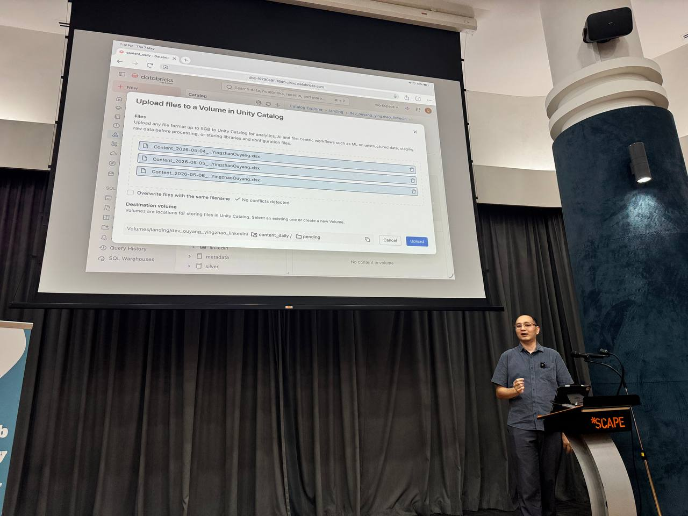
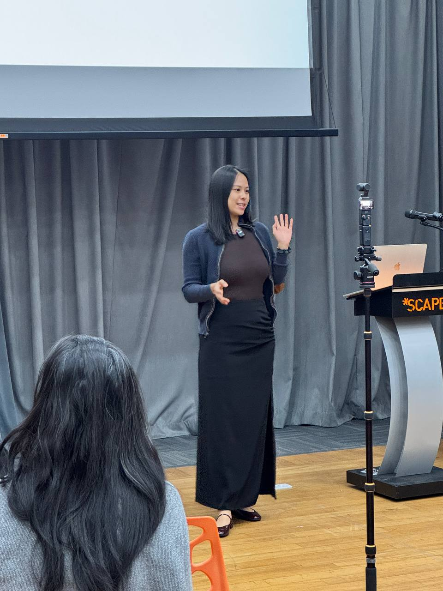
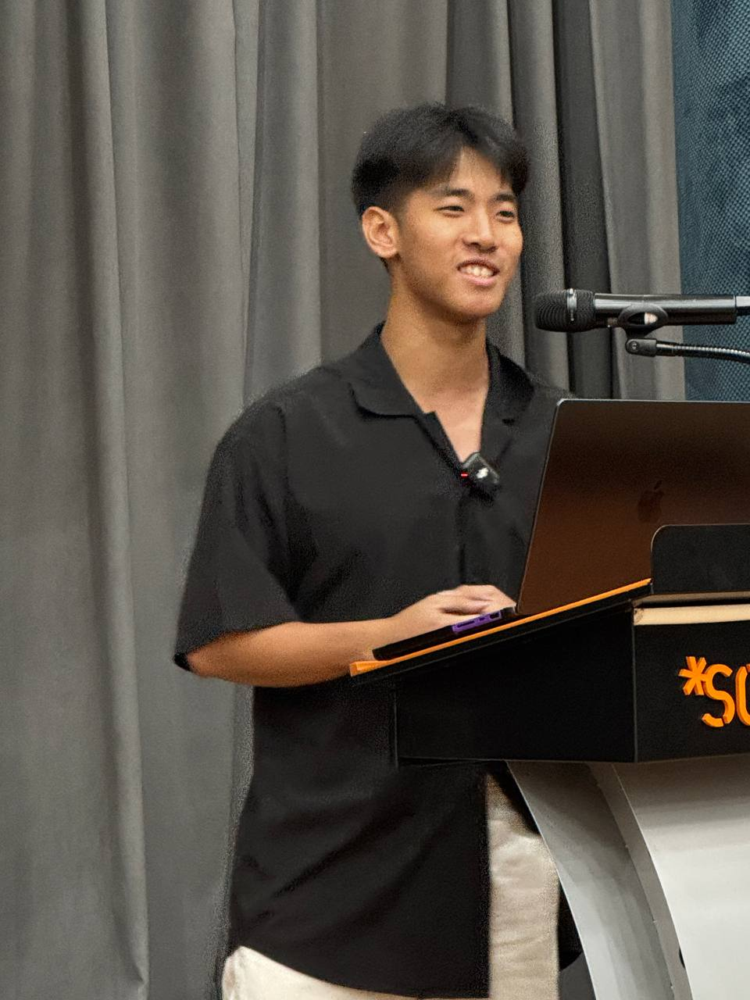
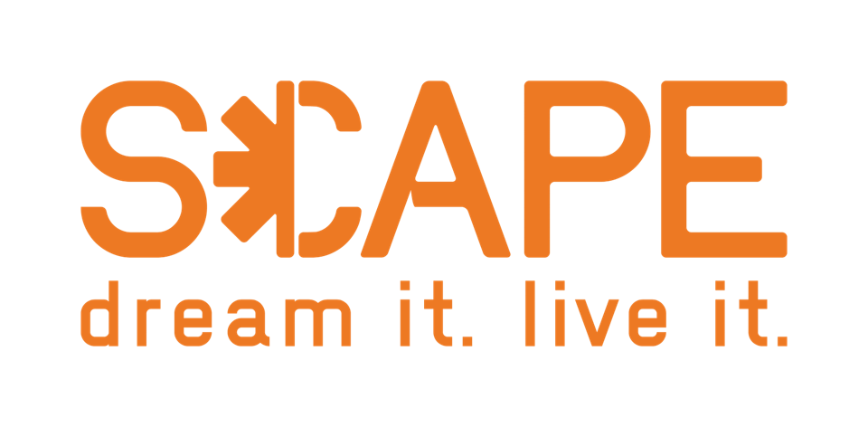

Roast #4 · May 7, 2026 · Singapore
Three stacks on the table: a production-style personal LinkedIn analytics pipeline, a caregiver navigation app, and a voice-driven resume. This recap preserves the practical decisions, trade-offs, and questions raised in the room.
Speaker 01
01
How To Get The Data
- API — the first-class route.
- Scraping — when the API doesn't give you what you need.
- 3rd party analytics — as a complement or fallback.
02
ETL In Medallion Terms
E → Extract (bronze) · T → Transformation (silver) · L → Load (gold). Databricks is the cloud-based platform that runs the data analytics and AI workloads.
03
Retries And Backoff
To overcome time-out issues, consider retries with backoff — especially for LLM calls and APIs. This prevents a huge bill shock when a provider starts failing in burst.
04
One Big Table Over A Relationship DB
The One Big Table approach beats a relationship database (e.g. Neo4j) for query speed and simplifies data consumption — fewer joins, one place to ask questions of.
Speaker 02

01
RAG Over Plain LLM
If you have a single source of truth, RAG is preferred over a raw LLM — it increases reliability. And if you need the LLM to do a web search, use a dedicated web search tool rather than letting the model guess.
02
Dynamic Model Selection With n8n
Consider an n8n dynamic model selector to choose the best model per use case. n8n reduces LLM usage overall and can switch between using an LLM web search and RAG depending on the query.
Speaker 03

01
Speech In, Speech Out
ASR (automatic speech recognition) turns the interview questions into text, and Whisper does the text-to-speech for the answers. The result: employers talk to a resume like it's a candidate.
02
Budget Compute That Lasts
For a budget option, Oracle Cloud's free tier lasts forever: 24GB RAM, 4 CPU, and 10TB egress — plenty for a side project with a video-heavy workload.
03
Guardrails For AI Applications
Always consider guardrails for AI applications, and the simplest way to build them is via a persona.md — encode who the AI is and what it will not do right in the prompt, checked before any answer ships.
Venue sponsor

Event ops volunteers